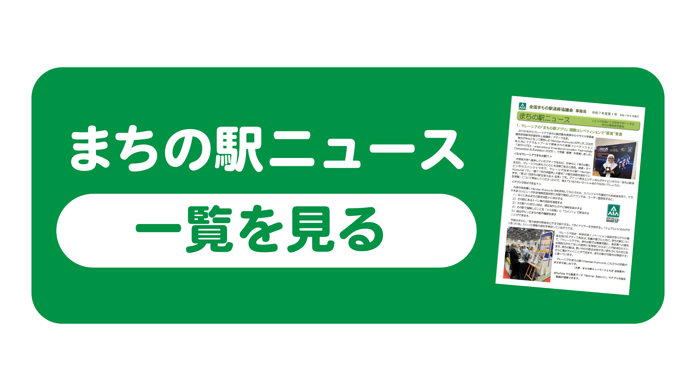
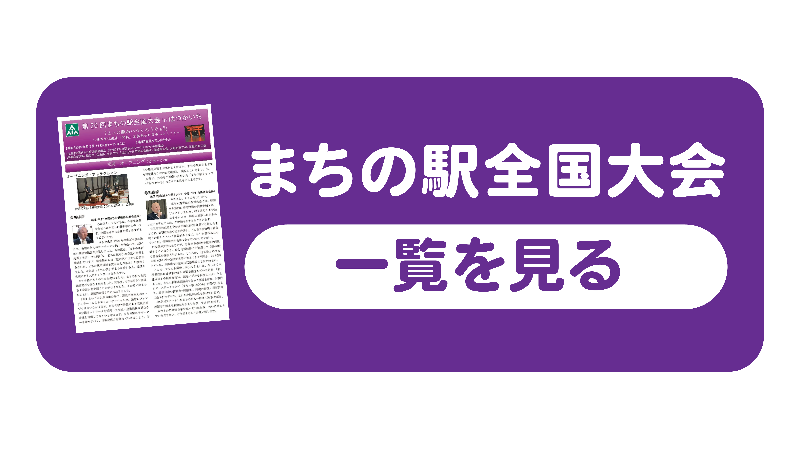

HOME
｜
まちの駅（テストページ）
｜まちの駅会員の方
まちの駅会員の方
まちの駅会員のみなさまへ
まちの駅の駅名、商号、駅長名、住所、電話番号など変更がございましたら、全国まちの駅連絡協議会事務局までご連絡をお願いいたします。
》 TEL:03-5823-4190 FAX:03-5823-4191
》 Mail:oshiete@machinoeki.com
各種マニュアル手続き
・まちの駅設置要項（URL確認後リンク設定）
・入会マニュアル（URL確認後リンク設定）
・各種手続き書類ダウンロード（URL確認後リンク設定）
全国まちの駅連絡協議会
・会則（URL確認後リンク設定）
・年次報告（URL確認後リンク設定）

